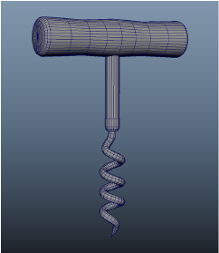
本示例说明了如何使用扫描网格(Sweep Mesh)工具创建红酒开瓶器的螺旋部分。若要创建螺旋曲线，需要安装螺旋工具 Bonus Tools。Autodesk.App Store 中提供免费的 Bonus Tools。
注： 螺旋工具 Bonus Tools 适用于先前版本的 Maya，因此您需要在 Maya 2020 中安装 Bonus Tools，在其中创建螺旋并将其粘贴到最新版本。
- 安装了螺旋工具 Bonus Tools 后，从 Maya 主菜单中选择 >
 。此时将显示“螺旋工具”(Spiral Tools)选项。
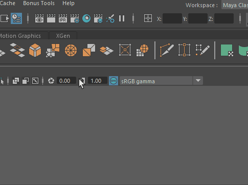
。此时将显示“螺旋工具”(Spiral Tools)选项。
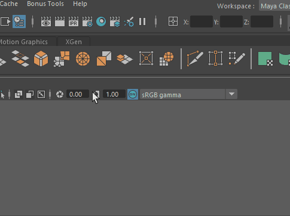 - 调整“螺旋工具”(Spiral Tools)的“高度”(Height)、“半径”(Radius)和“圆形数”(Rounds)值，直到获得所需形状。
“螺旋曲线”(Spiral Curve)工具不是程序性的，因此您需要设置值、应用和撤消，直到获得所需形状。
对于本示例，使用：- 高度(Height) = 8.7584
- 半径(Radius) = 1.1074
- 圆形数(Rounds) = 4.000
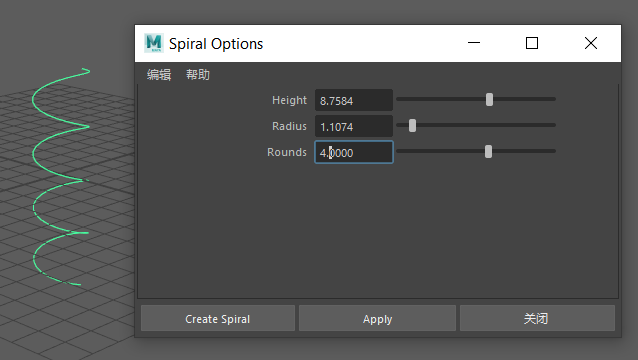 - 从“多边形”(Poly)工具架向场景添加一个圆柱体，以作为开瓶器螺旋的顶部，然后对其进行平移，使其位于螺旋顶部，作为开瓶器基底。
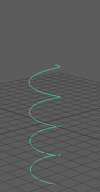
- 在螺旋上单击鼠标右键，然后选择“控制顶点”(Control Vertex)。按住 W 键并选择顶点以展开“移动工具”(Move Tool)标记菜单，然后选择“保持间距”(Keep Spacing)以在顶点之间保持距离。
- 选择螺旋顶部的顶点，然后对其进行平移，直到其与圆柱体的中心对齐。这将在开瓶器顶部圆柱体与主体接合的地方提供平直截面。
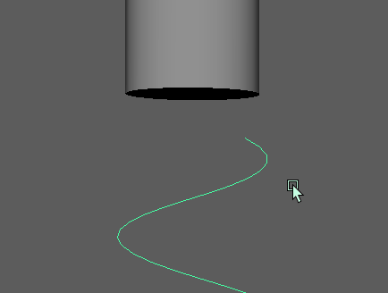
- 对螺旋底部的顶点进行类似调整，以变为尖头。
- 对形状螺旋满意后，在曲线上单击鼠标右键，然后选择“对象模式”(Object mode)。
- 现在，从“多边形建模”(Poly Modeling)工具架中选择“扫描网格”(Sweep Mesh)
 ，或在 Maya 主菜单中选择。该曲线采用默认的扫描形状，此时，边周围有些粗糙。
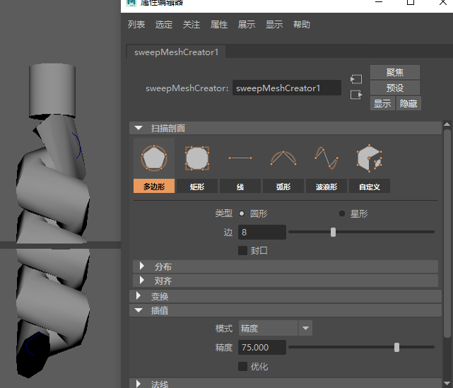
，或在 Maya 主菜单中选择。该曲线采用默认的扫描形状，此时，边周围有些粗糙。
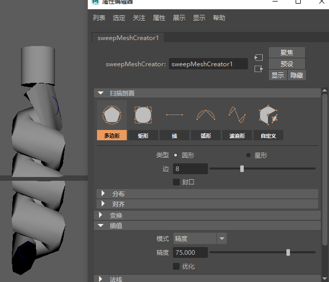 - 若要平滑圈，请通过最大化“插值”(Interpolation)区域中的“精度”(Precision)值来增加扫描网格分辨率。
- 通过调整“变换”(Transformation)区域中的“比例”(Scale)设置，减少螺旋的厚度。
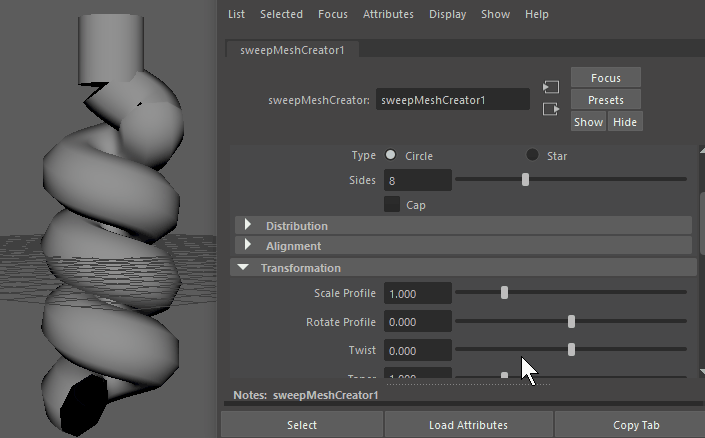
- 接下来，转到“扫描”(Sweep)设置的“变换”(Transformation)区域中的“锥化”(Taper)设置，调整圈，使它最终成为一个尖点。
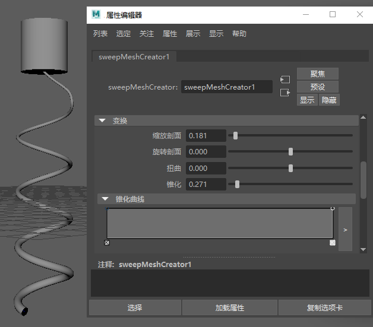
- 但是，螺旋曲线是上下倒置构建的，因此细尖头位于错误的一端。更改螺旋的方向，使其指向下方，方法是选择曲线，然后从“建模”(Modeling)菜单集 (F2) 中选择。
注： 务必选择原始曲线形状，而不是扫描网格，因为“反转方向”(Reverse Direction)适用于基本几何体。若要查看原始曲线，请在大纲视图(Outliner)中展开“组”(Group)，然后选择 CurveShape1。
- 锥化效果是线性的，这意味着，对开瓶器的细化将沿曲线均匀进行，而这无法生成尖头，因此将“锥化”(Taper)设置为 1.000，并展开“锥化曲线”(Taper Curve)渐变，以便仅在螺旋末端实现衰减。
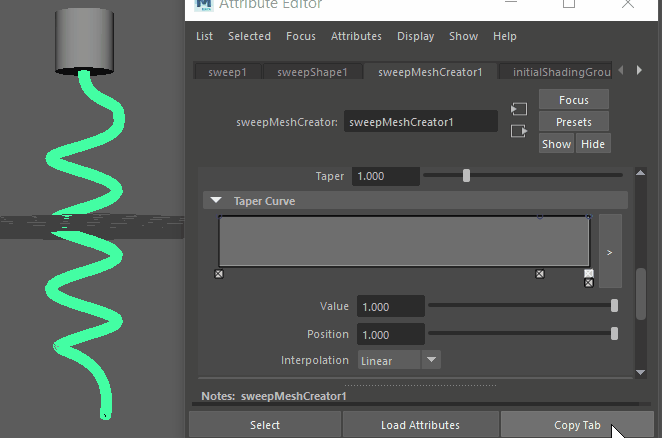
- 在“锥化曲线”(Taper Curve)的“插值”(Interpolation)菜单中，设置“样条线”(Spline)衰减以获得平滑效果。
调整“扫描网格”(Sweep Mesh)选项，直到您对结果满意为止。